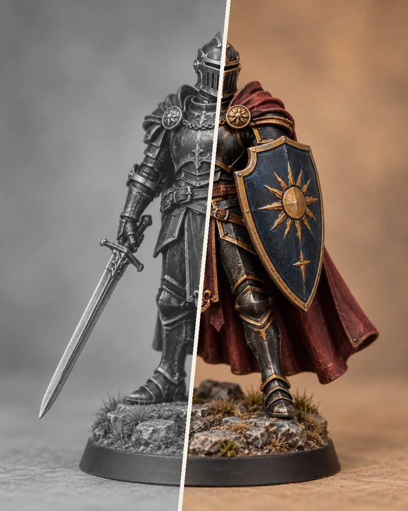
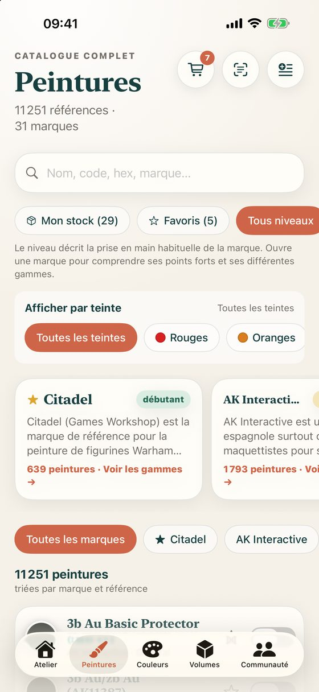
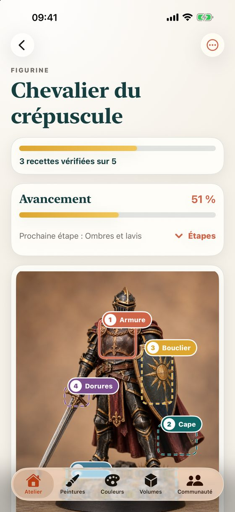
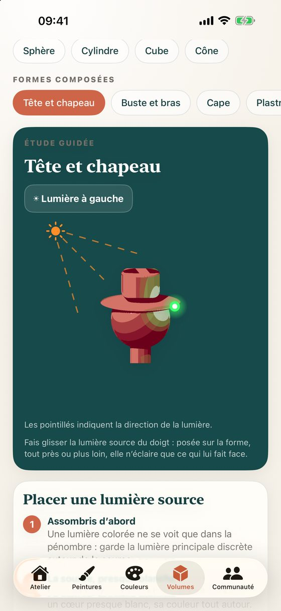
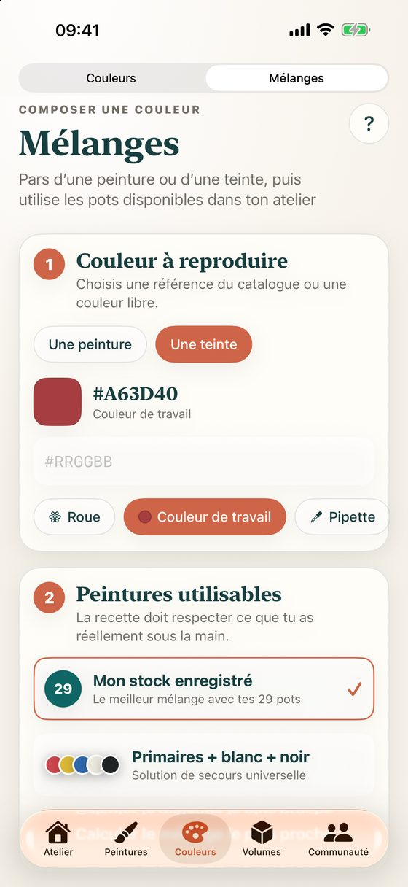
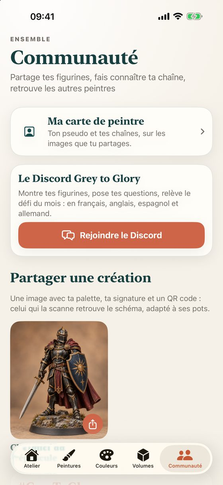

Peinture de figurines
Du gris de la sous-couche à la figurine finie.
Grey to Glory range tes pots, te propose des recettes de couleurs avec ce que tu as déjà et t’aide à comprendre où poser ombres et lumières.

01
Tes pots, enfin rangés
Plus de 11 000 peintures de 31 marques. Ton stock, tes favoris et ta liste de courses au même endroit ; un pot inconnu se retrouve en scannant son étiquette.

02
Une recette par zone
Prends ta figurine en photo et encadre l’armure, la cape, le socle… Chaque zone reçoit cinq tons tirés de tes pots, de l’ombre profonde au point de lumière, puis tu suis l’avancement étape par étape.

03
Comprendre la lumière
Sur une sphère, une cape ou une tête, l’app montre où va chaque ton. Ajoute une lumière source et déplace-la du doigt : elle n’éclaire que ce qui lui fait face. Le NMM, des exercices guidés et 18 fiches techniques complètent.

04
Mélanger juste
La roue chromatique, les harmonies, les peintures les plus proches d’une couleur, et des mélanges calculés avec les pots que tu possèdes vraiment.

05
Partager ce que tu peins
Une image avec ta figurine, sa palette, ta signature et un QR code : qui le scanne récupère le schéma, adapté à ses propres pots. Et un Discord pour montrer ton travail.
